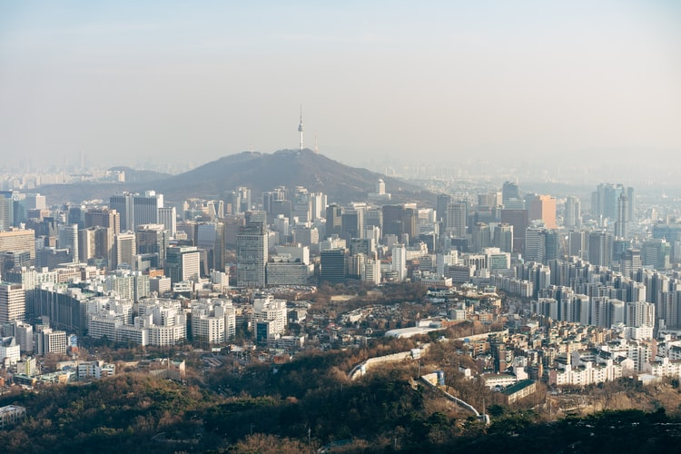

Seoul (/soʊl/, like soul; Korean: 서울[sʰʌ̹uɭ] (About this soundlisten); lit. 'Capital'), officially the Seoul Special City, is the capital[7] and largest metropolis of South Korea.[8] Seoul has a population of 9.7 million people, and forms the heart of the Seoul Capital Area with the surrounding Incheon metropolis and Gyeonggi province. Considered to be a global city, Seoul was the world's 4th largest metropolitan economy in 2014 after Tokyo, New York City and Los Angeles.[9] In 2017, the cost of living in Seoul was ranked the 6th highest globally.
With major technology hubs centered in Gangnam and Digital Media City, [12] the Seoul Capital Area is home to the headquarters of 14 Fortune Global 500 companies, including Samsung,[13] LG, and Hyundai. The metropolis exerts a major influence in global affairs as one of the five leading hosts of global conferences.[14] Seoul has hosted the 1986 Asian Games, 1988 Summer Olympics, 2002 FIFA World Cup (with Japan), and the 2010 G-20 Seoul summit.